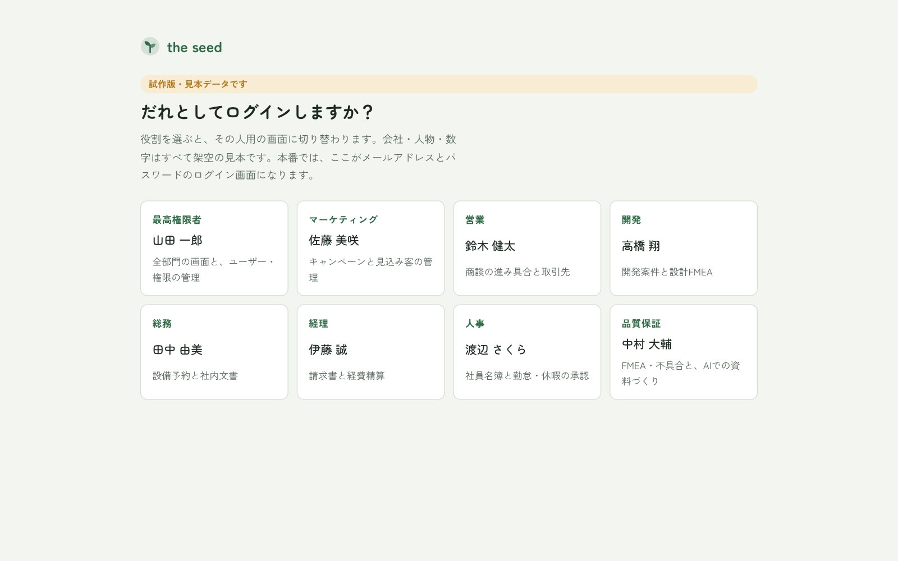
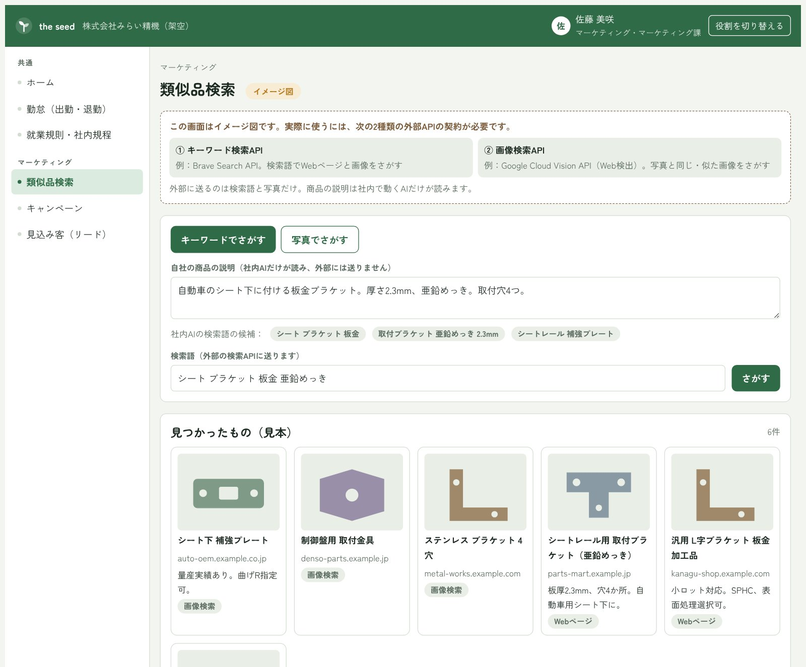
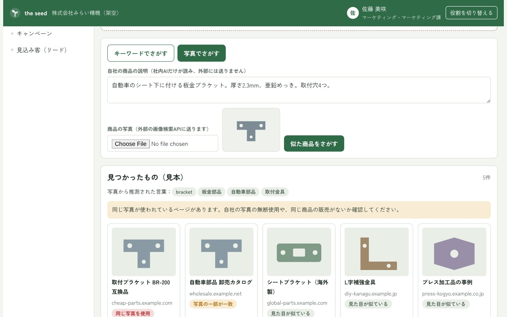
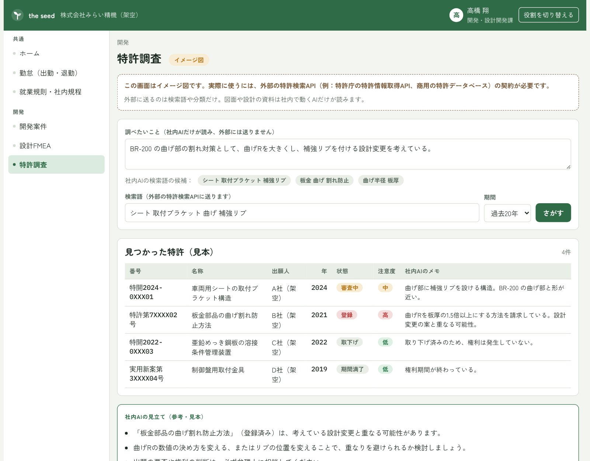
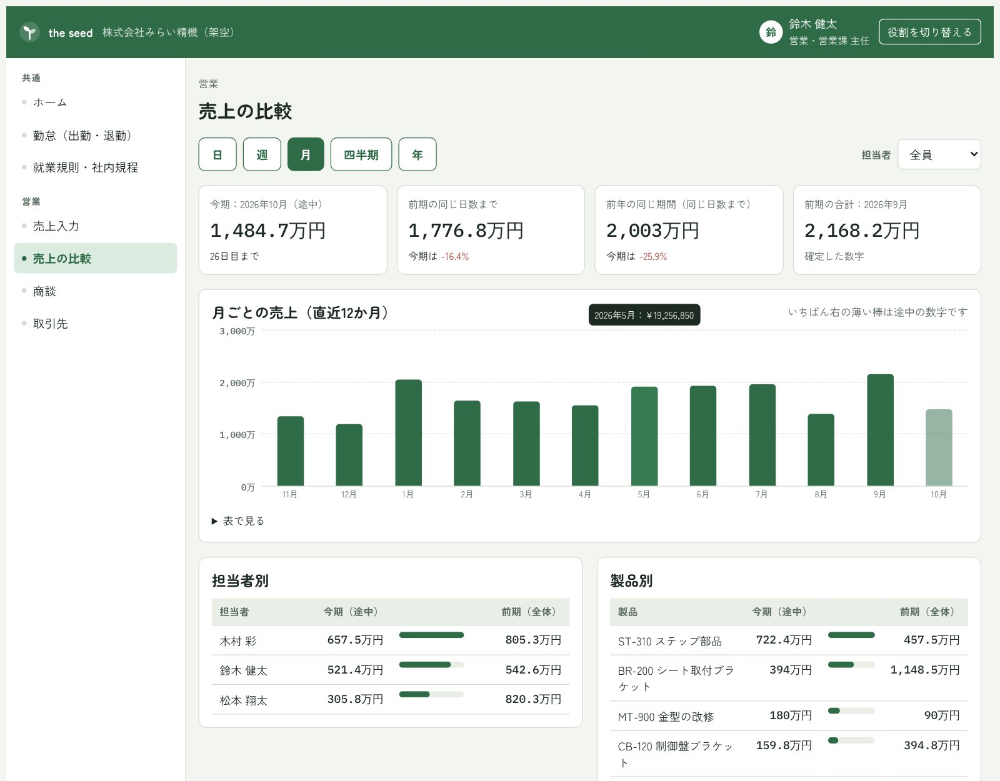
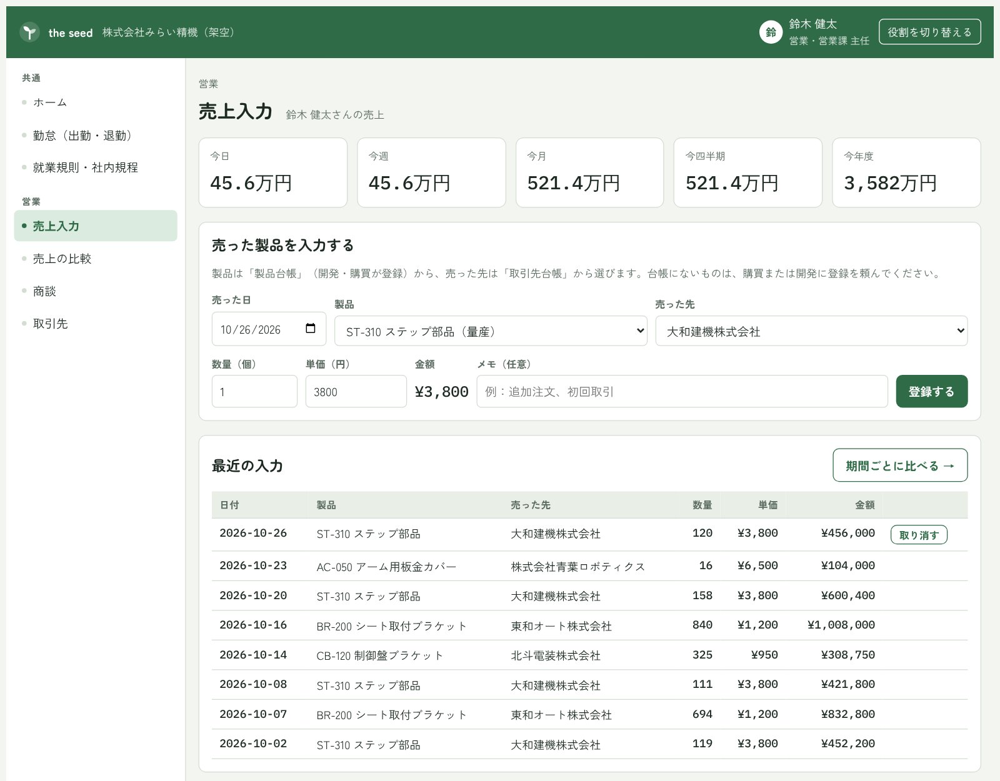
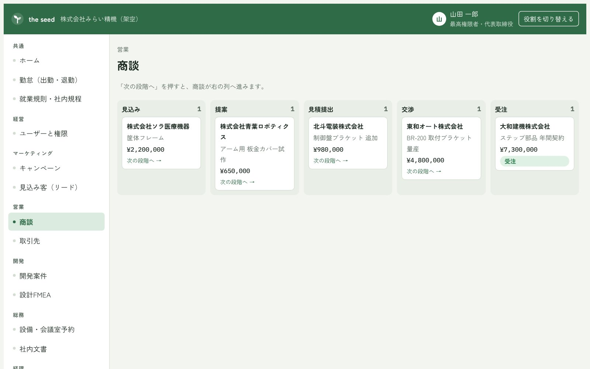
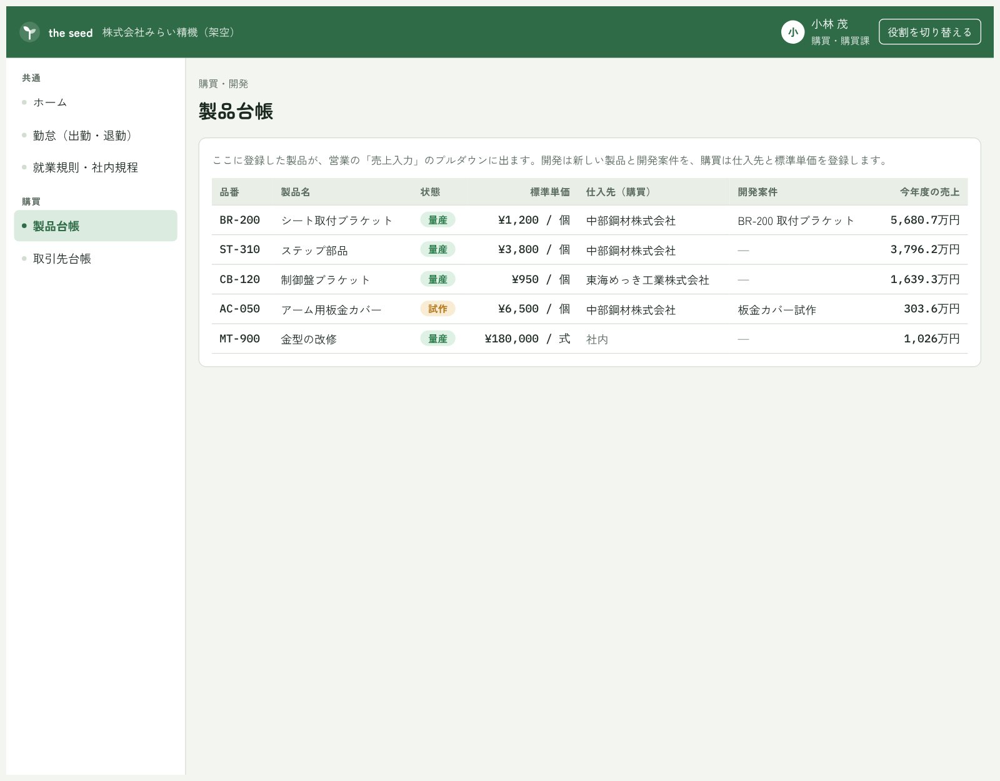

the seed
the seed でできること
the seed は、中小企業のための Mother AI と総合業務アプリです。1社ごとに専用で用意し、その会社の就業規則・社内ルール・FMEA を登録すると、その会社オリジナルの the seed に育ちます。AIは会社の中で動くので、社内の資料は外に出しません。外部の検索を使うのは、マーケティングと特許の調査のときだけです。
役割（最高権限者・マーケティング・営業・開発・購買・総務・経理・人事・品質保証）でログインすると、その役割に合った画面が開きます。下の画面は試作版です。画像を押すと大きく表示されます。
最高権限者（経営者）
- 会社全体の状況をひと目で確認（今日の勤怠、承認待ち、最近更新された規程）
- 社員の招待と、役割の設定


マーケティングイメージ図
- キーワードで、ネット上に似た商品がないかを調べる
- 商品の写真から、見た目の似た商品を探す
- 社内AIが自社の商品と比べて、違いや注意点をまとめる
※ 実際に使うには、外部の検索API 2種類（キーワード検索用・画像検索用）の契約が必要です。


特許（開発）イメージ図
- 考えている設計変更について、似た特許がないかを調べる
- 見つかった特許を「注意度（高・中・低）」で並べ、社内AIがメモを付ける
- 図面や設計資料は外に出さず、外に送るのは検索語だけ
※ 実際に使うには、外部の特許検索API（特許庁の特許情報取得APIや、商用の特許データベース）の契約が必要です。

営業
- 売った製品・数量・売った先を、営業担当者が一人ひとり入力する（製品と売った先は、購買・開発が登録した台帳からプルダウンで選ぶ）
- 日・週・月・四半期・年ごとの売上を比べる（前の期間や前の年の同じ期間と比較。担当者別・製品別・売った先別にも見られる）
- 商談の進み具合を管理する



購買
- 製品台帳と、取引先台帳（仕入先・得意先）を管理する
- ここに登録したものが、営業の入力画面のプルダウンに出る

品質保証・開発
- 登録したFMEAから、社内AIがデザインレビュー資料の下書きを作る
- 検査・作業の手順書の下書きを作る


人事（全社員の勤怠・規程）
- GPSで出勤・退勤。GPSが使えないときは理由を付けて手入力し、人事が承認する
- 就業規則・社内規程をキーワードで探して読める


掲載している画面は試作版です。会社名・人名・特許・商品はすべて架空です。
〈イメージ図〉と書いた機能は、外部の検索サービスと契約してから使えるようになります。
導入の流れやお見積もりについては、法人の方へのページをご覧ください。
the seed について問い合わせる